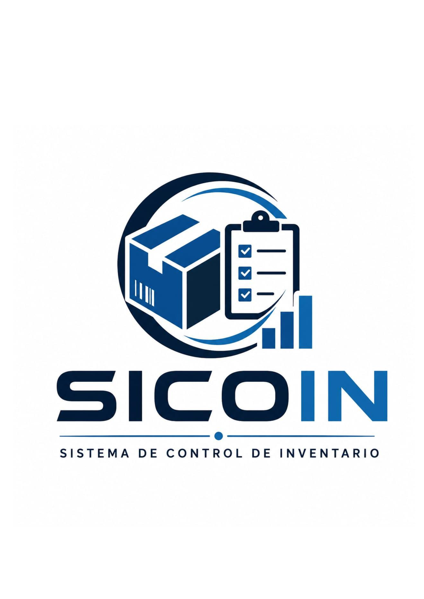
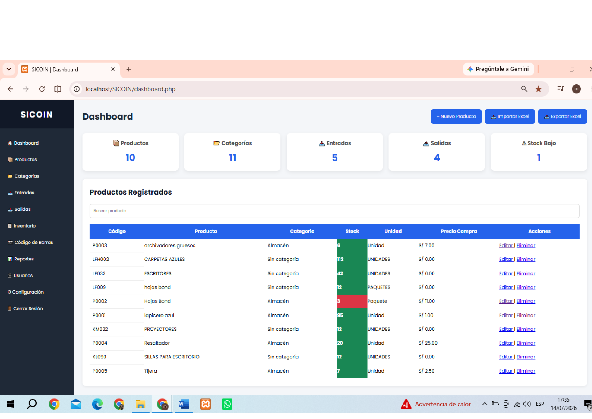
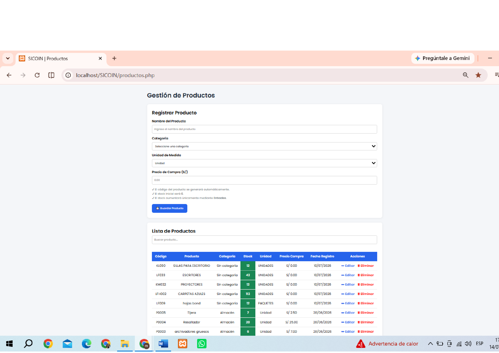
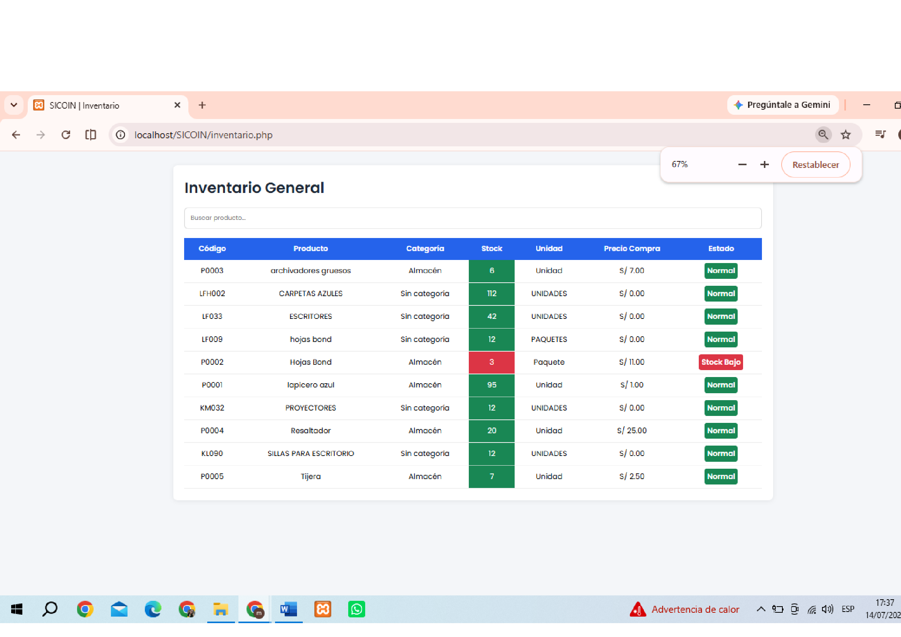
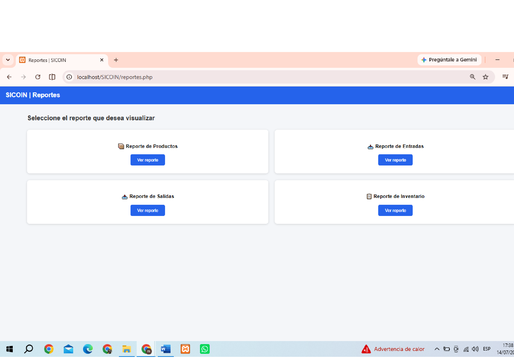

Desarrollado por Mercedes Daniela Reyes Cornejo
Instituto de Educación Superior Tecnológico Público
Juan José Farfán Céspedes
SICOIN es un sistema desarrollado para optimizar la gestión de inventarios en pequeñas y medianas empresas, permitiendo controlar productos, entradas, salidas, inventario, usuarios y reportes de manera rápida, organizada y segura.
Registro y administración de productos.
Organización de productos por categorías.
Registro de ingresos de productos.
Control de salidas y destino de productos.
Consulta del stock actualizado.
Generación y exportación de reportes.
Administración de usuarios del sistema.
Configuración de la información de la empresa.



